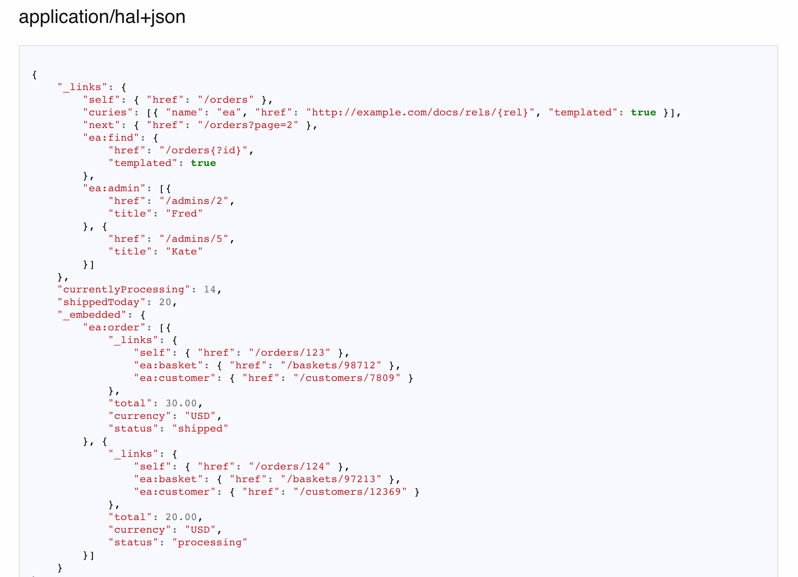
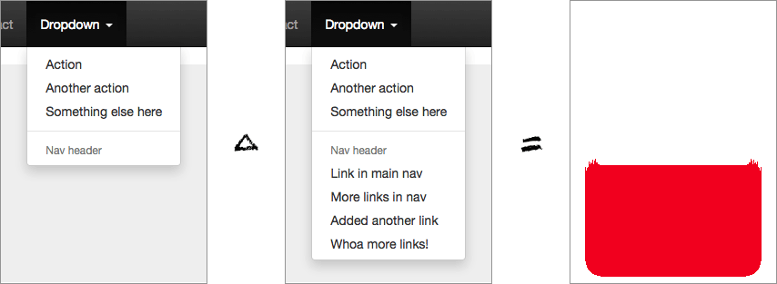

Quality Control
Testing
Why write tests?
To catch bugs in most common answers.
While true, this is not the most important reason.
Why write tests? - In theory
- Faster dev cycles
- Better design
- Higher quality
- Making sure you are writing only what you need
Why write tests? - In reality
- Fast release cycles
- Finite (no) QA resources
- Large integrated codebase
- Person modifying the code is rarely original author
What are the type of tests?
Scope:
unit,
integration,
functional
Performance:
load,
stress
Perspective:
Correctness,
Usability (General),
Usability (Specific axix: I18n, Accessibility)
Misc:
Security,
...
What do we test?
Common cases:
The happy paths,
In all their forms (E.g. wide chars Îñţérñåţîöñåļî~åţîöñ)
Edge cases
empty/0 items,
no data,
wrong input/output
Failure cases:
Failures in production lead to uncommon code
Anything that led to a bug:
Once it's fixed, you want it to stay fixed
Properties of a good test
- Each test method exercises one thing
- Comprehensive
- Deterministic
- Hermetic
Properties of a good unit tests
- Tests the "smallest" component possible
- Ideally each test exercises one path through one method
- Fast (< 10ms most of the time)
- No calls to a database, bigtable etc.
- Limited or no FileIO
- No sockets except to your own process
- No calls to external slow functions
Properties of a good integration test
- Tests interaction between components
- Ideally each test exercises the interaction between exactly two components
- Look for places where you used “stunt doubles” in unit tests. These are paths you haven’t tested yet
Properties of a good integration test

Properties of a good e2e test
- Tests the system end to end
- Functional testing everything is not possible (combinatorial explosion)
- Stability matters, and is expensive
- Choose Functional tests that add confidence. Sample goals -- after executing all functional tests:
- Every page was loaded at least once
- Every subsystem was executed at least once
- Don't forget to load/stress/performance tests

| Featrure | Unit .. Functional |
|---|---|
| Speed |

| Featrure | Unit .. Functional |
|---|---|
| Isolation |

| Featrure | Unit .. Functional |
|---|---|
| Confidence in parts |

| Featrure | Unit .. Functional |
|---|---|
| Confidence in system |

| Featrure | Unit .. Functional |
|---|---|
| Fragility |
| Featrure | Unit .. Functional |
|---|---|
| Speed | |
| Isolation | |
| Confidence in parts | |
| Confidence in system | |
| Fragility |
Tests allocation

Verifying with "Goldens"
What is "Goldens"
Golden is expected result of some program execution stored in a form of text (or JSON) file or as a screenshot of UI state.
Examples of "Goldens"
Giving the funciton the same input we expect exactly the same output that can be compared with stored "Golden"
"Goldens" from one system can be passed as input into anther systems and so on...
var golden = TestUtils.readGolden("InputGoldenName");
var result = ClassUnderTest.exec(golden);
TestUtils.compareWithGolden(result, "OutputGoldenName");
Result of "Goldens"

Result of "Goldens"
Testing strategy
- Before integrating
Pros: greener build. Cons: much slower dev. - After integrating
Pros: faster dev. Cons: build less green. Buildcops presence required. - Combined
Code Review
A human reviewer can understand the context for certain coding practices, and make a serious risk estimate that accounts for both the likelihood of attack and the business impact of a breach.
- OWASP
Properties of good code review
Every code line integrated into master branch should be reviewed by the person other than the one who wrote it.
Hints for better code review
Discuss the goals of code reviews with your team.
spread knowledge
learn codebase
catch bugs
enforce styling
Visualize method call hierarchies.
This will help to take a look into the problem that code is trying to solve under different angle.
Do code reviews as soon as you see the request.
Set a time limit to understand the changes.
Decided if you can approve review or send questions for clarification
after the limit reached.
Schedule a time for more details review.
Imagine how you would make this change before you read it.
Read the feature description first, and try to make a list of the files you expect to change.
Read the change in a realistic development environment.
Try to pull the change onto your own machine so that you can see compile errors, warnings, and test failures.
Always give approval, unless you can prove that there is a bug.
If you don’t feel qualified to give approval, say it in those words and come up with a plan to get the right person. Help them feel your good intentions by being very clear about what the next step is.
Run the app and try playing with the feature.
Chances are, if you run the app,
you will do something slightly different than what the author tried when
testing their change.
You may discover important cases they missed.
Type of reviewers
- Module/App Owners:
Every module should have owners. Every integration should be reviewed by owners. - Readability:
Module is not bound to one particular language. It can consist from multiple code pieces from different systems or configs. Every change should be reviewed the person who competent in the language (aka checked for readability).